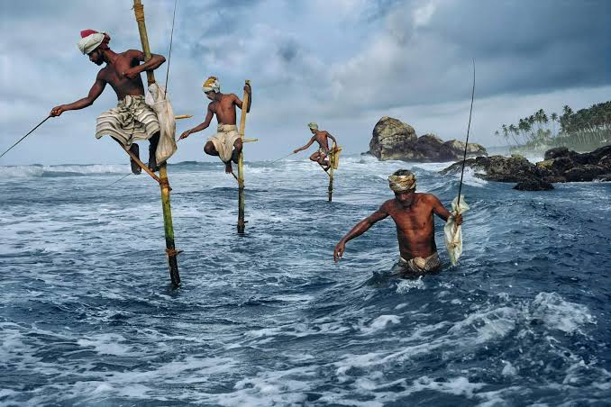

Key Attractions

Watch local fishermen balancing on stilts while fishing in traditional style.

Weligama is famous for beginner-friendly surfing lessons and waves for all levels.

Enjoy the scenic bay with calm waters, perfect for swimming and boat rides.

Visit the iconic Coconut Tree Hill for breathtaking views and photography opportunities.

Experience local fishing culture and watch traditional techniques by the shore.